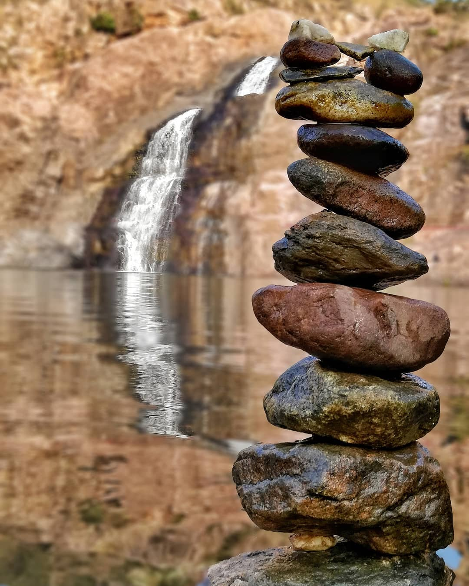
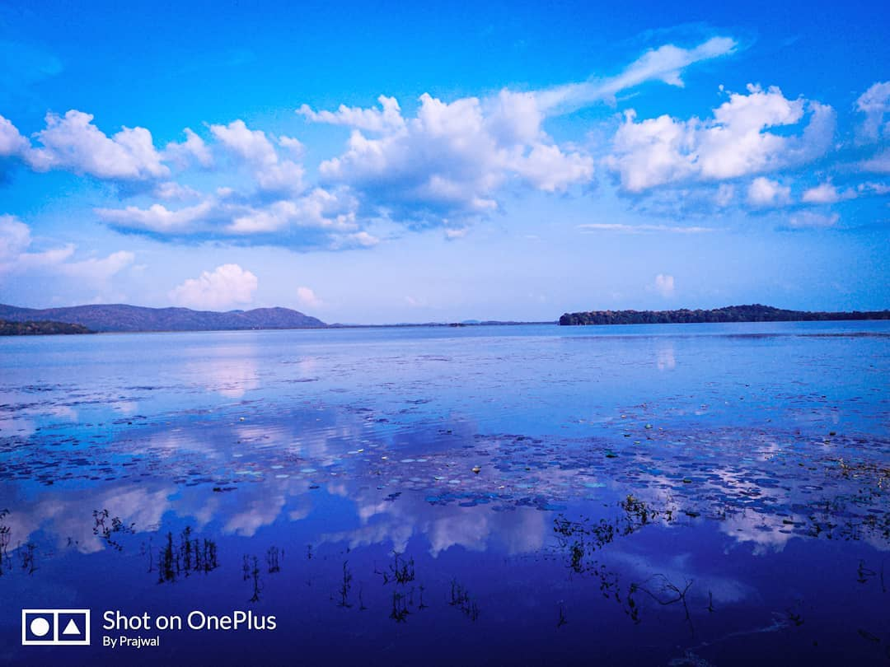
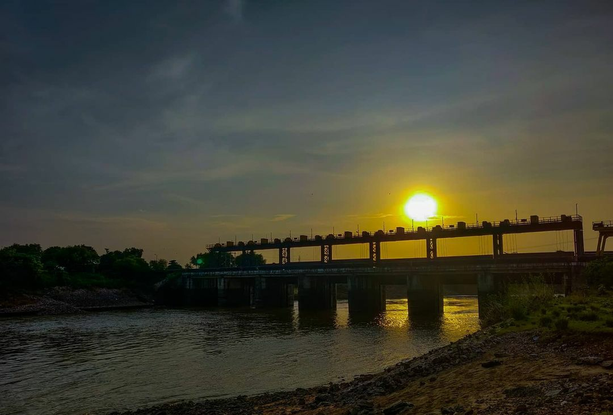

Aaloo Chat
This sweet spicy and sour tangy aloo chaat is also a popular street food ...
" Full of Natural Beauty "
Gondia district was carved out by division of Bhandara district. Gondia district is situated on North-Eastern side of Maharashtra state having state borders of Madhya Pradesh and Chattisgarh. There is no large scale industry in the entire district due to this district is economically backward. There are many rice mills in the district as paddy is the main agriculture produce here. Gondia city is popularly known as RICE CITY due to large number of rice mills.... The district is divided into 4 subdivisions namely Gondia, Deori, Tiroda and Morgaon Arjuni. Gondia Subdivision has 1 taluka. Deori Subdivision has 3 talukas. Tiroda subdivision has 2 talukas and Morgaon Arjuni Subdivision has 2 talukas having 556 Grampanchayat 954 revenue villages exist in the district. The district area is divided into six legislative assembly constituencies namely Gondia, Tiroda, Goregaon, Amgaon, Lakhandur and Sakoli. Lakhandur and Sakoli constituencies has an area of Gondia and Bhandara district.


Hazara Falls, in Salekasa tehsil is a major tourist attraction during the rainy season. It is located 1 km from Darekasa Railway Station and visitors can enjoy the sight of natural vegetation. The place is also ideal for camping as well as trekking activities. It is a spectacular view covered with Dense forest and hills. It falls between Gondia and Dongargarh railway stations en-route Mumbai-Howrah main line.
Hazara Falls is 191 km from Nagpur, 33 km from Darekasa and close to the Gondia district. Hazara Falls, in Salekasa tehsil is a major tourist attraction during the rainy season. August to December is best time to go. It is located 1 km from Darekasa railway station. The place is also ideal for camping as well as trekking activities
Kachargadh is located at a distance of 55 km. from Gondia and is a popular tourist destination because of the 25000 year old natural caves situated here. Here archaeologist found stone weapons were used by person of that era. It is situated in the dense forest and paradise for trekker, worshiping place for local tribal.
Kachargadh Caves is located around 55 km from Gondia in Salekasa tehsil. Kachargadh Caves is famous since it belongs to Paleolithic age situated in the hills. These 180x110x55 feet ancient caves are considered to be 25000 years old. The attraction situated in dense forest and a paradise for trekkers, is the worshipping place for local tribals (Gonds).
The Kachargadh cave is a gathering place for Kings and Queens of Gondwana. The Gondawana is a huge area and the Gond tribes are spread all over the forest in small groups. Every group has a group-leader and they refer him as King and his wife as Queen. These people enjoy a huge gathering in this cave every year. They share their experiences among themselves at this place. Also they perform small skit or dance which reflects an image of their place and group and group culture. This gathering may continue over a month or so. This cave also acts as a meeting point for making some of the important decisions too. For example, in the last few years, the tribe has decided not to cut the bamboo from the forest for industry which was one of the important steps. Also, apart from all God and Goddess, they pray to Jungle too for their welfare.
The Nagzira wildlife sanctuary is a miraculously preserved “Green Oasis” in the easternmost part of the Maharashtra State and has a great importance from bio-diversity conservation point of view. This sanctuary is locked in the arms of nature and adorned with picturesque landscapes, luxuriant vegetation and serves as living outdoor museum to explore and appreciate nature. This wildlife sanctuary is indeed nature’s priceless asset and beckons one and all to enjoy its picturesque landscape, its scenic beauty, its pure and fresh air. It is really a boon to us and hence we must realise the real worth of this marvelous treasure house of nature and must protect it as a part of our national heritage. It has got immense potentials from bio-diversity conservation point of view and its values.
It is an important conservation unit in Central India in general and Vidarbha in particular. It acts a “Green-lung” for the adjoining human settlements and helps in maintaining the environmental balance.
It is home of many endangered species. The vertebrate fauna includes, besides a number of fishes, about 34 species of mammals, about 166 species of birds including migratory land and water birds, about 36 species of reptiles and about 4 species of amphibia. This sanctuary is notable for its wealth of birds and is indeed a bird watcher’s paradise. The zoological values of this sanctuary are briefly given below.
The park is situated at southern part of Gondia district. It is located in eastern part of Maharashtra state and constitute area of 133.78 Sq.Km. It has greate importance from nature conservation point of view. It is indeed nature priceless assets and beckons one and all to enjoy its picturesque landscape, its pure and fresh air. It has got immense potentials from biodiversity conservation point of view. The national park has diverse type of vegetation ranging from dry mixed forest to moist forest. The vertibrate fauna of National park includes 209 species of birds, 9 species of reptiles and 26 species of mammals which includes Tiger, Panther, Jungle cat, Small India Civet, Palm Cavet, Wolf and Jackle. Interpretation centre, small museum and library facilities are available at park. Seven Watch cabins and five watch towers are located at park for wild life observation and photography.
Nawegaon Lake in Nawegaon National Park stretches over an area of 11 sq. km. According to legend, this lake was built in the eighteenth century by Kolu Patel Koli. At present, he is called by the name of Kolasur Deo and his statue can be found on one peak encircling the lake. Local people believe that these idols assisted Kolu in making the Nawegaon Lake

Chulbandh Dam Gondia When in Gondia, start your day afresh with an early morning visit to Chulbandh Dam. Located across the Chulbandh river, Chulbandh dam is an ideal place to enjoy the natural surrounding. The dam has a total storage capacity of 21,452 cubic meters, and is approximately 465 m long and 22.08 m high. Scenic landscapes, lush greenery, and absolute serenity will transport you to an unworldly environment. Make a point to go for a long walk on the pathway along the dam.
As such there's nothing exciting thing to do around the Chulbandh Dam but one can definitely go a long walk along the dam or even go or picnic with family.
Chulbandh Dam, is an earthfill dam on Chulbandh river near Goregaon, Gondia district in state of Maharashtra in India.
Discovered at the village of Shenda in Gondia by archaeologist Dr. Manohar Naranje belonging to the Eastern Vidarbha back in the year 2012- Nagra Shiv Temple dates back its existence to the late 15th Century. Styled in Hemadpanthi, this temple is believed to have inherited the name from Lord Nagraj.
A craftsmanship of sheer brilliance, Nagra Shiv Temple consists of 16 pillars sans joints and is home to several other temples of Lord Hanuman, Goddess Parvati and sundry. Beautifully structured with bricks, Nagra Shiv Temple houses the celebrated Shiva lingam made of pure graphite. According to the archaeologist, the Shiv Temple is said to have been the property of the Wakatak reining the land some 1500 years back.
The staunch believer of Shiva sect- Wakataks crafted the 52 cm Shiva Lingam in an obscure yellow stone of graphite on a 34 cm platform. The Brahmasutra inscribed temple shelters a 75 cm vintage well within its complex that is encompassed with eastern rings.

This sweet spicy and sour tangy aloo chaat is also a popular street food ...
Bhakar is a delicious Indian recipe served as a Bread
Festivities in India are incomplete without sweet boondi! These tiny sweet round balls are made of besan and dipped in sugar syrup
Wada pav basically has Batata vada which is sandwiched between two slices of a pav (dinner roll) topped with sweet chutney, green chutney and dry garlic chutney.
A bhaji, bhajji, bhajiya or bajji is a spicy hot snack or entree dish similar
Ice cream is a sweetened frozen food typically eaten as a dessert.


Address: Ring Road Chowk, Gajanan Coloney Road, Gondia, M, S, 441614
Timing: 24*7

Address: Nandu Seth ka Bagicha, Bhandarkar Rd, Rail Toly, Gondia, Maharashtra 441614
Timing: 10am to 9pm.

Address: Ekodi, Maharashtra 441614
Timing: 11am to 9pm.

Address:Tiroda Rd, Kudwa, Gondia, Maharashtra 441614
Timing: Open at 9:30 am

Address: Arihant Colony, Gondia, Maharashtra 441614
Timing: 9am to 9pm.

Address: Mahila urban bank, Main Rd, Rail Toly, Gondia, Maharashtra 441601
Timing: 10am to 8.30pm.

Bhandara District is an administrative district in the state of Maharashtra in India. The district headquarters are located at Bhandara. The district occupies an area of 3717 km2 and has a population of 1,200,334, of which 19.48% are urban as of 2011.
Chandrapur is a city and a municipal corporation in Chandrapur district, Maharashtra state, India. It is the district headquarters of Chandrapur district. Chandrapur is a fort city founded by Khandkya Ballal Sah, a Gond king of the 13th century.
Gadchiroli is a town and a municipal council in Gadchiroli district in the state of Maharashtra, central India. It is located on eastern side of Maharashtra, and is the administrative headquarters of the district.